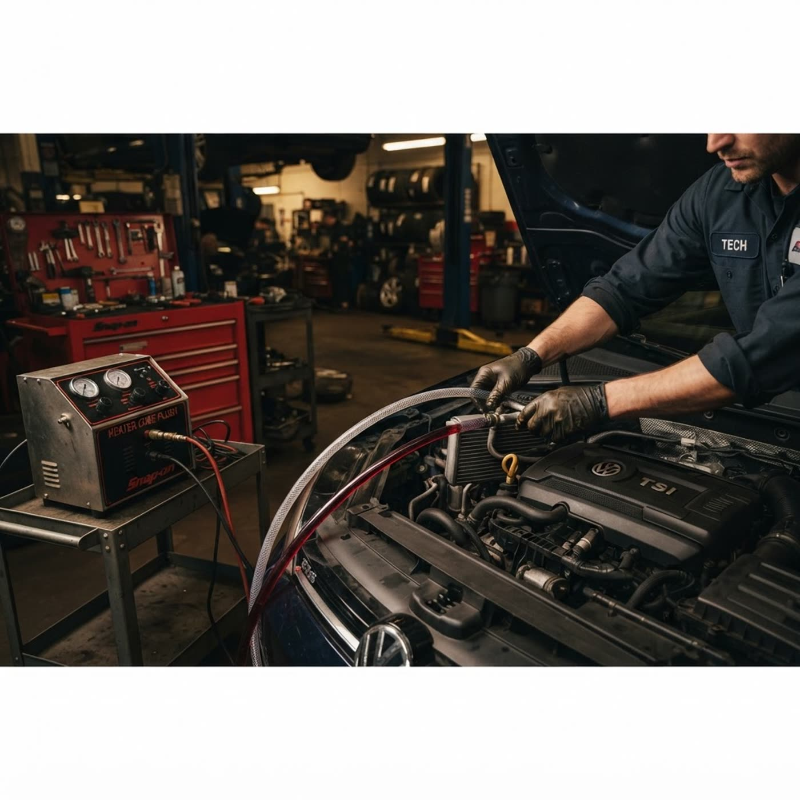

Тёплая печка без снятия панели — за 30 минут
Промывка радиатора печки и системы охлаждения через установку: химраствор ходит по сотам в обе стороны, грязь вымывается, а не размазывается. В работе — только радиатор печки, панель вашего авто не трогаем.
Реверс потока: раствор ходит туда-сюда
Прямое включение промывает только «удобную» часть сот. Наша установка меняет направление потока — и вымывает грязь из глубины радиатора. Нажимайте «туда» и «сюда» или включите автоцикл: соты светлеют с каждым проходом.
Три шага — и в салоне тепло
Запись
Звоните — днём или ночью: по предварительной записи работаем 24/7. Согласуем время, назовём цену по вашему авто.
Отключение от системы
Радиатор печки отключается от основной системы охлаждения. В очистке задействован только он — двигатель и контур не трогаем.
Промывка и тепло
Установка гонит химраствор туда-сюда около 30 минут. Панель не снимается — результат: отопление как в новом автомобиле.
Ещё три услуги из объявления
Замена радиатора печки
Если промывка уже не спасает — замена со снятием панели. Честно скажем, что нужно именно вам.
Компьютерная диагностика
Считаем ошибки, проверяем электронику и датчики — прежде чем что-то менять.
Диагностика дымогенератором
Ищем подсосы воздуха и негерметичности — дым виден там, где проблема.
Перед записью
Почему из печки дует холодным?+
Почему не вручную, а установкой?+
Панель правда не снимают?+
Сколько это стоит и сколько занимает?+
Ночью тоже примете машину?+
Записаться на промывку
Позвоните или оставьте заявку: уточним авто, назовём точную цену и подберём время — днём или ночью.
+375 33 695-16-09ИП Пригун Надежда Владимировна · УНП 391257186 · Полоцк, ул. Гагарина